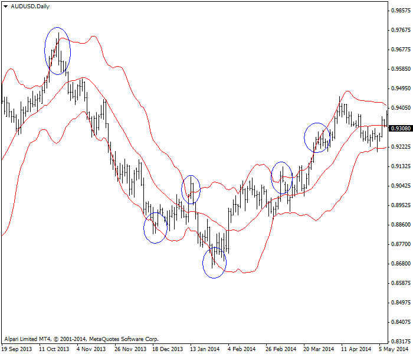
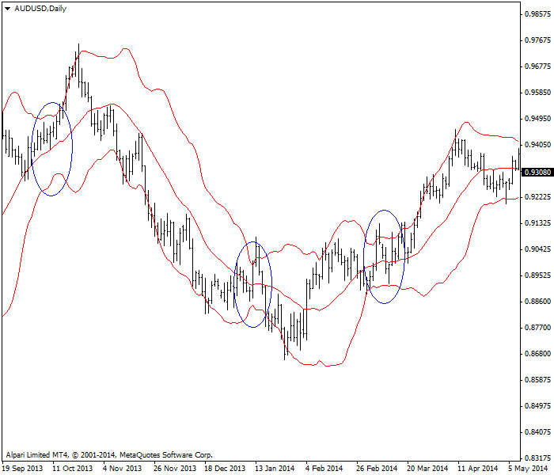
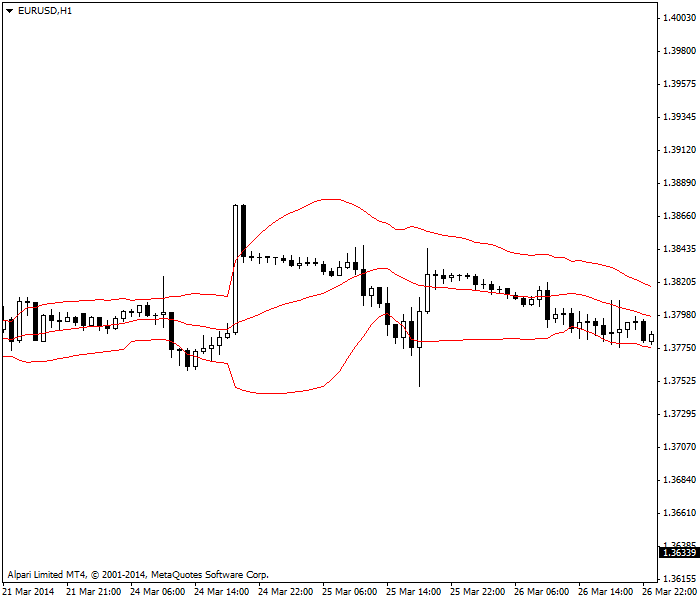

<!DOCTYPE html>
<html>
</html>
<head>
  <meta charset="utf-8">
  <meta http-equiv="X-UA-Compatible" content="IE=edge">
  <title>外汇站（fx-z.com） - 布林线</title>
  <meta name="description" content="">
  <meta name="viewport" content="width=device-width, initial-scale=1">
  <meta name="robots" content="all,follow">
  <!-- Bootstrap CSS-->
  <link rel="stylesheet" href="vendor/bootstrap/css/bootstrap.min.css">
  <!-- Font Awesome CSS-->
  <link rel="stylesheet" href="vendor/font-awesome/css/font-awesome.min.css">
  <!-- Google fonts - Roboto-->
  <link rel="stylesheet" href="https://fonts.googleapis.com/css?family=Roboto:400,300,700,400italic">
  <!-- owl carousel-->
  <link rel="stylesheet" href="vendor/owl.carousel/assets/owl.carousel.css">
  <link rel="stylesheet" href="vendor/owl.carousel/assets/owl.theme.default.css">
  <!-- theme stylesheet-->
  <link rel="stylesheet" href="css/style.default.css" id="theme-stylesheet">
  <!-- Custom stylesheet - for your changes-->
  <link rel="stylesheet" href="css/custom.css">
  <!-- Favicon-->
  <link rel="shortcut icon" href="img/favicon.png">
  <!-- Tweaks for older IEs--><!--[if lt IE 9]>
    <script src="https://oss.maxcdn.com/html5shiv/3.7.3/html5shiv.min.js"></script>
    <script src="https://oss.maxcdn.com/respond/1.4.2/respond.min.js"></script><![endif]-->
</head>
<body>
  <div id="all">
    <div class="container-fluid">
      <div class="row row-offcanvas row-offcanvas-left"> 
        <!--   *** SIDEBAR ***-->
        <div id="sidebar" class="col-md-4 col-lg-3 sidebar-offcanvas">
          <div class="sidebar-content">
            <h1 class="sidebar-heading"> <a href="https://fx-z.com">fx-z.com</a></h1>
            <p class="sidebar-p">介绍外汇相关的基本知识，告诉您如何进行自己的技术面和基本面分析，讲解先进的交易理念，并且为您阐述失败交易者与专业交易者之间的真正区别。 </p>
            <p class="sidebar-p">通过这些课程的学习，您将学会如何根据自己的优势来应用情绪分析，还将了解真实世界的事件会对货币汇率产生什么影响，央行在外汇市场中所发挥的作用，以及交易者在颇受欢迎的即期外汇交易中有哪些选择方案。 </p>
            <ul class="sidebar-menu">
                <!-- Link-->
                <li class="sidebar-item"><a href="https://fx-z.com" class="sidebar-link">首页</a></li>
                <!-- Link-->
                <li class="sidebar-item"><a href="cihui.html" class="sidebar-link">外汇词汇</a></li>
                <!-- Link-->
                <li class="sidebar-item"><a href="ebook.html" class="sidebar-link">获取外汇电子书</a></li>
            </ul>
            <p class="social"><a href="https://www.cn-forextime.com/zh?partner_id=4920383" target="_blank"data-animate-hover="pulse" class="external facebook"><i class="fa fa-eur"></i></a><a href="https://www.cn-forextime.com/zh?partner_id=4920383" target="_blank" data-animate-hover="pulse" class="external gplus"><i class="fa fa-gbp"></i></a><a href="https://www.cn-forextime.com/zh?partner_id=4920383" target="_blank" data-animate-hover="pulse" class="external twitter"><i class="fa fa-rmb"></i></a><a href="https://www.cn-forextime.com/zh?partner_id=4920383" target="_blank" title="" class="external instagram"><i class="fa fa-dollar"></i></a><a href="https://www.cn-forextime.com/zh?partner_id=4920383" target="_blank" data-animate-hover="pulse" class="email"><i class="fa fa-money"></i></a></p>
            <div class="copyright text-center text-md-left">
             
              
            </div>
          </div>
        </div>
        <!--   *** SIDEBAR END ***  -->
        <!--   *** DETAIL ***-->
        <div class="col-md-8 col-lg-9 content-column white-background">
          <div class="small-navbar d-flex d-md-none">
            <button type="button" data-toggle="offcanvas" class="btn btn-outline-primary"> <i class="fa fa-align-left mr-2"></i>菜单</button>
            <h1 class="small-navbar-heading"> <a href="https://fx-z.com/8-5.html">下一篇 </a></h1>
          </div>
          <div class="row">
            <div class="col-xl-10">
              <div class="content-column-content">
                <h1>布林线</h1>
       <p>
    布林线是迄今为止最有用的指标之一，可同时兼顾趋势和波动性衡量。John Bollinger 于 20 世纪 80 年代发明布林线，并于 2001 年发表了以布林线为主题的书籍。
</p>
<p>
    它的计算技巧似浅实深。您首先从简单的 20 周期移动平均线开始。用软件计算这 20 个周期数据的标准差，然后乘以 2。将得到的数值与 20 周期移动平均线相加，即得到上轨线，或者用 20 周期移动平均线减去该数值，即得到下轨线。这两条轨线形成了您的价格可能达到的最大范围。
</p>
<p>
    您无需了解标准差的确切计算方法，因为我们足够幸运，能用软件为我们计算。但您必须了解，标准差是一种用于衡量价格围绕中心点的价格变动的方法，中心点在本例中是指 20 周期移动平均线。在围绕基准线——20 日移动平均线的价格变动中，标准差占有极高的比例，约 68%。将标准差乘以 2 之后，布林线几乎占据了围绕移动平均线产生的所有价格变动，约 95%。
</p>
<p>
    因此，如果价格突破其中一条轨线，这在统计学上是罕见的异常事件，值得您进行密切关注。突破布林线意外着相关货币有大事件发生。
</p>
<p>
    <strong>布林线交易理念</strong>
</p>
<p>
    Bollinger 发现，价格突破轨线时是极好的交易时机。我们预计价格将延续突破方向。但在外汇行情中，突破布林线后，价格走势很少会沿用原方向。例如，在高于上轨线的位置经历两至五个周期后，我们几乎总能看到价格回撤至移动平均线，而且有时候一路回撤至下轨线。因此，在外汇领域，您可以将突破上轨线视为逆向指标。您应当考虑退出多头头寸，或者卖空。
</p>
<p>
    另一个理念是，当价格高于 20 周期移动平均线并且朝上轨线攀升时，您的头寸在价格触及上轨线之前都是安全的，因此我们预计价格会在触及上轨线之后回撤——毕竟，从统计学上看，价格超过正常分布范围是罕见的异常事件。上轨线形成了一条阻力线。同样，下轨线形成了一条支撑线。
</p>
<p>
    还可以将上轨线看作货币超买位，将下轨线看作货币超卖位。我们并不赞成这种解释，或者更确切地说，这种关于超买和超卖的说法。首先，我们有更好的指标来判断超买和超卖水平，例如相对强弱指数和随机震荡指标。随机震荡指标利用棒形图要素之间的关系（尤其是最高价和收盘价）来衡量交易者对当前价格的情绪。另一个原因在于 20 周期相对平均线是一个滞后指标，且仅限于 20 个周期。大事件可能发生在第 22 个时间周期，但它们不会显示在当前的布林线图表中。布林线的特质让它具有自适应性，并且不提供锚定或历史视角。最后，您可能会遇到 40 个周期或更久的单向价格走势。这会引起布林线收缩。根据定义，我们假设一个中央趋势，即价格最终将回到移动平均线——但布林线未提供任何关于回归位置和回归时间的线索，而其它专门设计的指标可以提供该信息。
</p>
<p>
    请查看以下澳元布林线图表。圆圈标记了多个价格突破布林线的示例——而且请注意，这些突破均未能持续五天以上，通常仅持续一至两天。突破之后，价格向另一条轨线移动。
</p>
<p>
     AUD/USD 每日图表，布林线突破用圆圈标记
</p>
<p>
    <strong>波动要素</strong>
</p>
<p>
    当两条轨线非常接近时，显然，价格与基准线 20 周期移动平均线相距不远。为了分析布林线，我们将 20 周期移动平均线视为“标准”。布林线带宽较窄意味着波动性很低。如果正常带宽收缩，变成收紧、狭窄的带宽，这说明该货币对交易者正在经历一段不确定时期。Bollinger 将这种情况称为收敛状态，而且收敛状态几乎总是出现在突破之前。您无法通过布林线得知突破方向。为了判断该方向，您需要查看其它指标。不过，您已经得到警示——当布林线带宽变得很窄时，您应该减仓，而不是加仓或孤注一掷。
</p>
<p>
    下图显示经典 AUD/USD 布林线，其中有三处收敛状态，而且收敛状态之后的价格走势均发生变化。
</p>
<p>
     AUD/USD 每日图表，布林线收敛区用圆圈标记
</p>
<p>
    当布林线带宽相对较宽，说明波动性很大。如果您有较好的方向性证据来指示回升或暴跌，那么就无需担忧波动性太大，因为我们预计价格趋势将延续相同的方向，直到干扰事件发生。不过请注意，您的布林线也可能进一步扩张，同时价格无趋势且出现一系列峰值。当交易者对价格走向意见各异时，您会发现价格刚刚触底两小时或两天后，价格又迅速到达高于 100 点的高点。
</p>
<p>
    下图显示每小时欧元图表。您可以看到，价格触底、掉头向上并达到峰值高点后，窄带宽扩张为宽带宽，但您很难说这张图表体现了任何方向趋势。
</p>
<p>
     EUR/USD 每小时图表显示布林线扩张
</p>
<p>
    <strong>与其它指标结合使用</strong>
</p>
<p>
    布林线可大致用作支撑线和阻力线，即方向指引。而且，作为衡量波动性的方法，它有助于确定头寸大小以及止损位和目标位。但布林线指标的基础——20 周期移动平均线具有一定的限制，主要在于其核心的“中央趋势”理念——价格应该回到标准值 20 周期移动平均线。但外汇价格可能出现强趋势，导致中央趋势长期停顿。此外，布林线的一个优秀特点——它能自动适应变化的条件——同时也是缺点。它让您无法获得任何关于近期走势的见解，例如近期最高价和最低价，或近期走势的动量。布林线经常与以下指标结合使用：MACD、动量指标以及具有较强动量因素的抛物线 SAR 指标。
</p>
<p>
    专业提示：根据您交易的时间周期，您可以研究首次布林线突破后，价格走势在多少个时段内保持同一方向。在外汇每日图表上，很少有走势能在高于布林线的位置持续 5 天以上。不过，它可能在每小时或 4 小时图表上持续更久——对您而言，这是一次机会。
</p>
<p>
    <br/>
</p>
<p>
    <br/>
</p>
              </div>
            </div>
          </div>
        </div>
      </div>
    </div>
  </div>
  <!-- JavaScript files-->
  <script src="vendor/jquery/jquery.min.js"></script>
  <script src="vendor/popper.js/umd/popper.min.js"> </script>
  <script src="vendor/bootstrap/js/bootstrap.min.js"></script>
  <script src="vendor/jquery.cookie/jquery.cookie.js"> </script>
  <script src="vendor/owl.carousel/owl.carousel.min.js"></script>
  <script src="vendor/masonry-layout/masonry.pkgd.min.js"></script>
  <script src="js/front.js"></script>
</body>